The gradient was initially calculated by difference, using a convolution kernel of [-1, 1] to convolve in the x and y directions to obtain partial derivatives, and the gradient was obtained based on the square root of the sum of the squares of the partial derivatives.
Subsequently, in order to solve the problem of too noisy edges caused by direct difference calculation, a Gaussian filter was added before difference calculation to smooth the image and reduce noise interference. However, Gaussian filtering and difference calculation can be combined into one filter, and convolution through this filter is equivalent to performing the above two operations.
Because I like symmetry, I used a convolution kernel of [-1, 0, 1] in my experiment . This way I can get a completely axisymmetric DoG operator.
The change after Gaussian blurring is that a smaller threshold needs to be used during binarization , and the resulting edge will become wider and the noise will be reduced.
Due to the characteristics of floating point calculations, we cannot expect the two to be completely consistent. Under a relative error of 1 % , the results of Gaussian blur and difference are consistent with those of direct DoG convolution. The same is true for visual effects.
The sharpening process is to get the low-frequency signal by blurring, obtain the high-frequency signal by subtracting the original signal from the low-frequency signal, and then superimpose a certain amount of the high-frequency signal on the original signal. There used to be some errors when writing this code. Specifically, I ignored the type of the array at the beginning and did not remember to convert the unsigned number to a signed number for subtraction , and the high-frequency signal may have negative values. Missing type conversion often does not affect the overall effect, but there are obvious noise in some places, which is caused by overflow of unsigned number subtraction.
α=2, σ=1

As for the evaluation of re-sharpening, it is easy to observe from the selected photos of Chen Duling that the blurred photos do highlight the edges after sharpening, but the effect is closer to increasing the contrast near the edges rather than restoring the original appearance.
α=2, σ=25


The principle of blending images is easy to understand, but in the process of implementing color image blending, I found a small bug in the given code framework. The function sktr.rescale will scale the array in all dimensions according to the ratio by default. If you pass in multiple channel images directly, the function may scale off some of them when the ratios of the points you pick are very different. We can pass one channel at a time, but manually picking points may not be so aligned. The solution is to specify channel_axis . I tried automatic alignment, but it didn't work well, and I didn't think there would be any general approach for two images whose contents are likely to be unrelated. For debugging purposes, I later aligned the images directly through PS , otherwise I would have to manually pick points every time (this combined with the behavior of the aforementioned rescale function is quite confusing when debugging).
My favorite result is the mixed image of Zhao Jinmai . From a distance she is looking to the left, but from a closer look she is looking straight ahead. The Fourier spectrum of the low-frequency signal is compressed close to the two coordinate axes, while the Fourier spectrum of the high-frequency signal is more uniform in color and greenish in tone, but the small center is not as bright as the center of the low frequency. In the color mapping of the called python library, yellow-green corresponds to larger values, and blue-purple corresponds to smaller values. We can vaguely see an axis of distribution from the image, the direction after mixing is similar to the high frequency, and the overall tone is determined by the low frequency.
Although the high-frequency signal in this experiment has three channels, I show them according to their mean gradients, and the calculations are done separately. Otherwise, there will still be cases where the high-frequency signal value is less than 0.
α=3, σ=9 (low pass), σ=5 (high pass)


The quality of the composite photo of Brilliant Orange is not as good, but the outline is really close so it can't be too bad. It looks like a paper lantern in the near distance, which I think is still interesting.
I tried to blend an image of my high school with an image of raindrops, and I think the result was a partial failure. The edge of the building is almost invisible in the blended image, which is what I expected. This method is mainly suitable for images with similar shapes. I know that I can create the false image required for the assignment by selecting a pair of images with large differences. However, I was surprised that the raindrop effect had problems. This may be one of the few cases where the shapes are different and good results can be produced. When zoomed out, it really looks like looking at the school in my memory through a window on a rainy day. The problem is that after zooming in, there are more parts that are too black and too white, and even some noise can be distinguished because of the color. My opinion is that the color of the low-frequency part is very stable and effective enough, and the high-frequency color will bring unexpected interference. In addition, if the high-frequency component can automatically adjust the amount of superposition, especially to avoid overflow and truncation, it may produce better results.
α=3, σ=9 (low pass), σ=5 (high pass)
 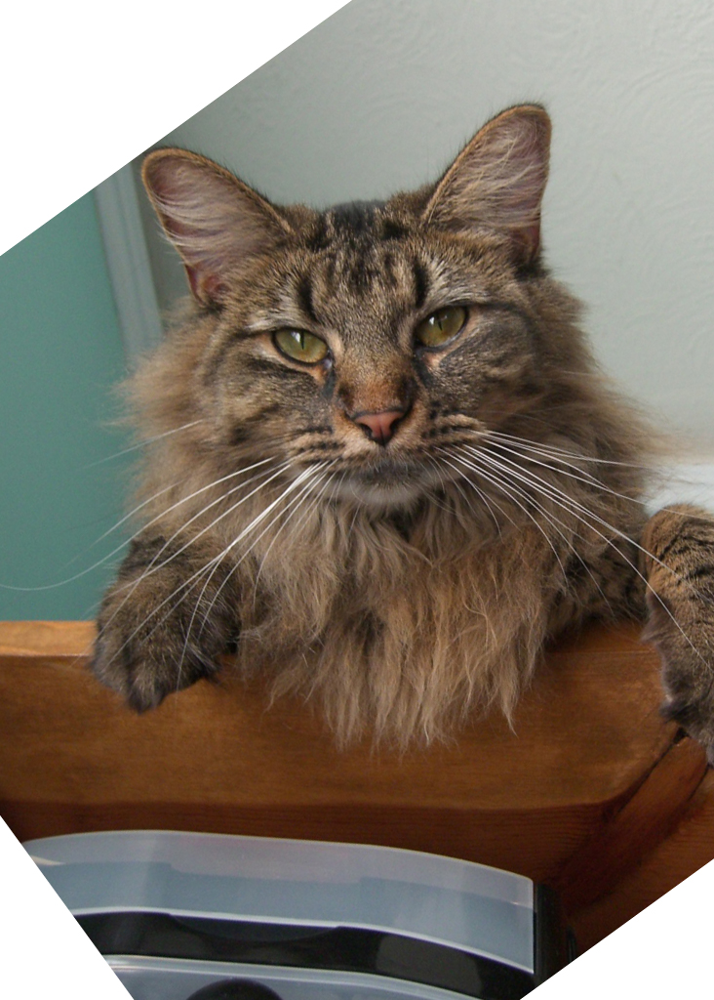
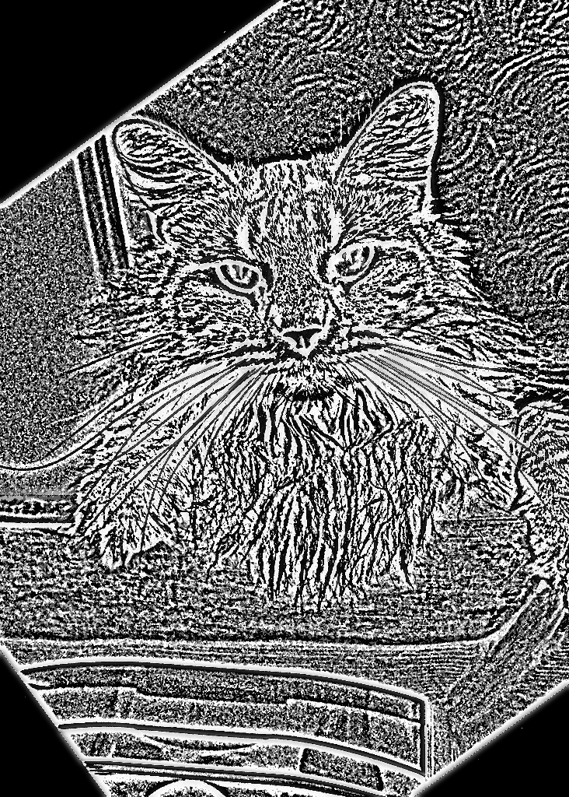
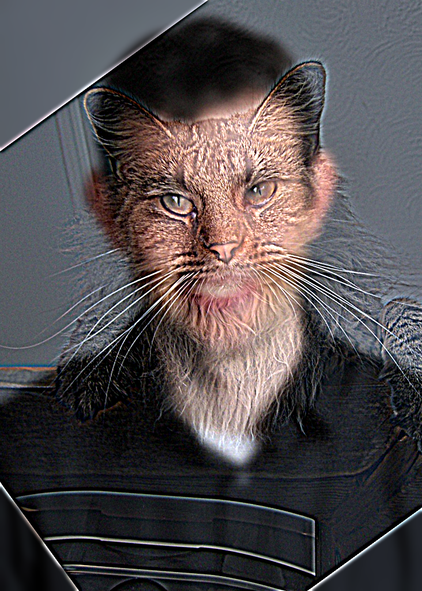
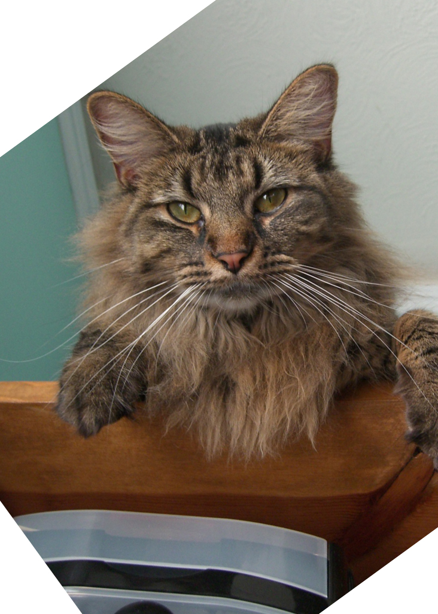
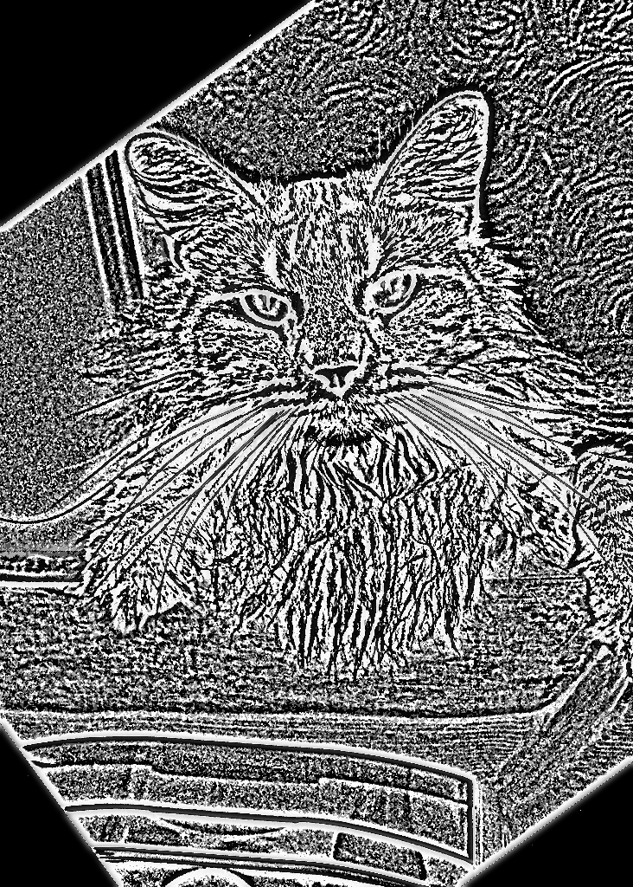
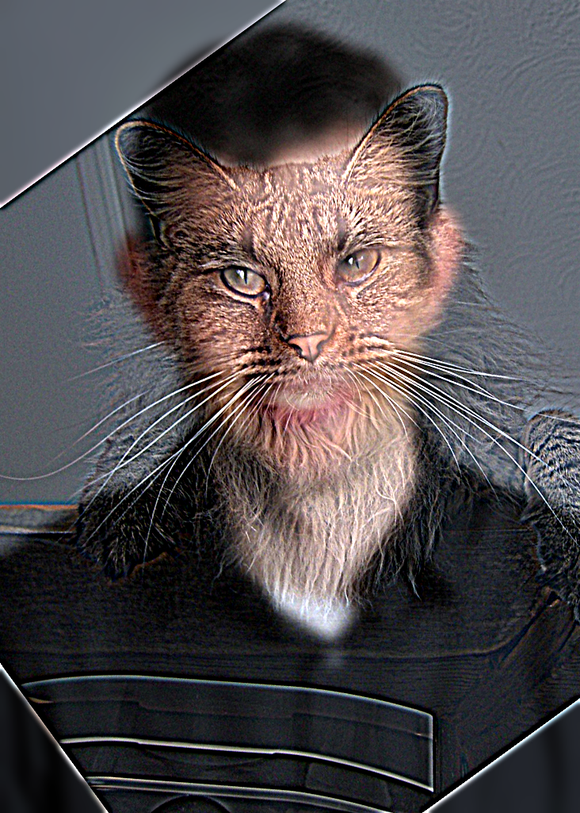
 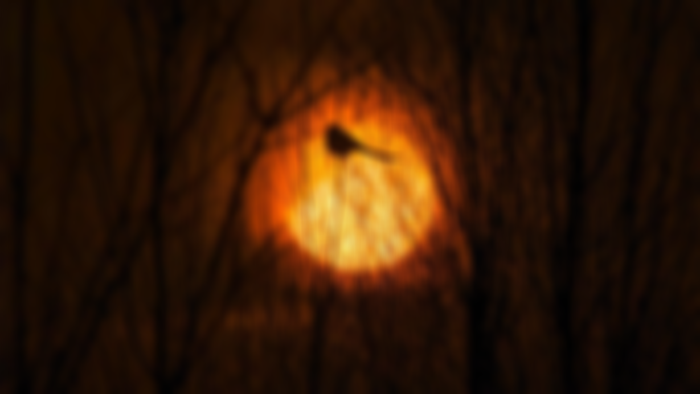
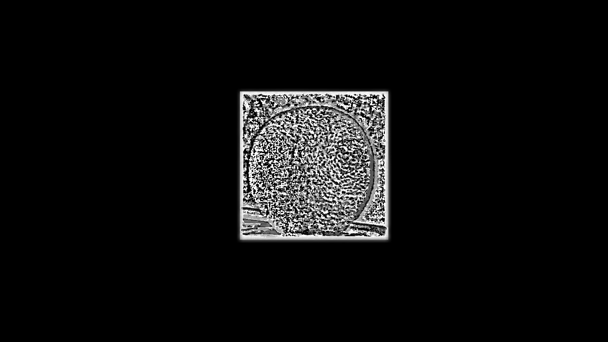
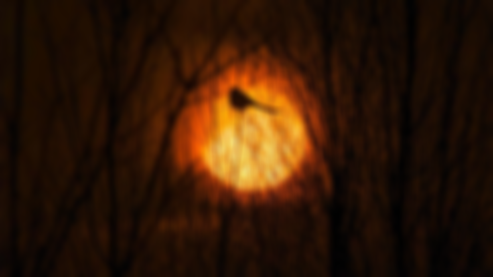
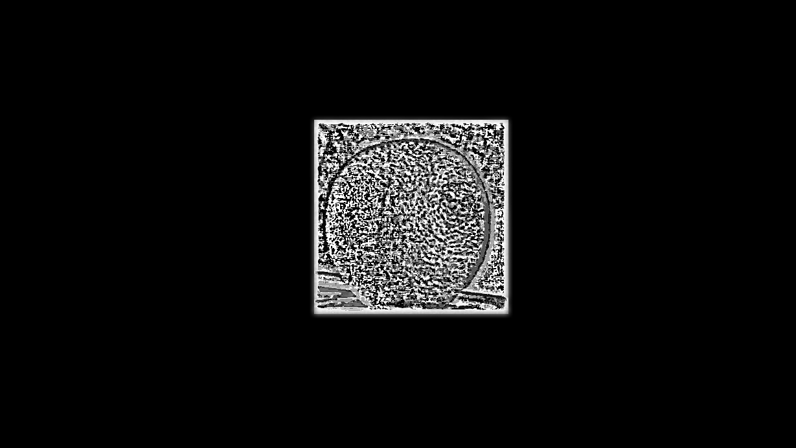
I used a Gaussian stack to get the masks at each level so that they can be processed uniformly with the image. The main bugs I encountered were in the operation of unsigned and signed numbers. In most cases, even if the code ignores this, it can run normally, but sometimes noise will be generated in parts that change dramatically on large images. My solution is that each level is not truncated to 0 to 2 55 during the operation , but the output of each level is truncated and truncated at the end. At the same time, because there may be negative numbers in the Laplace stack, I also chose to take the average and then draw the real value through color mapping instead of drawing a color picture.
σ=5
 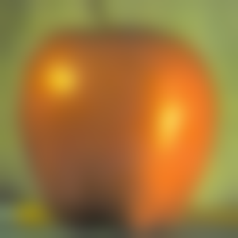
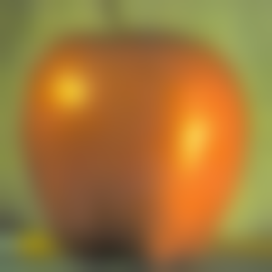


 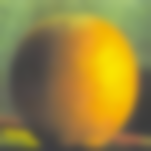
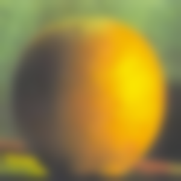
 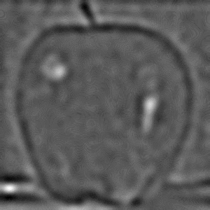
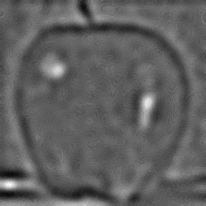
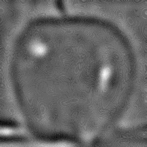
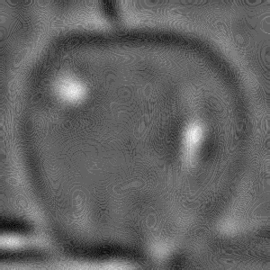
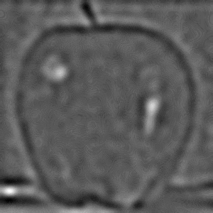
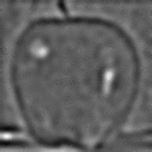
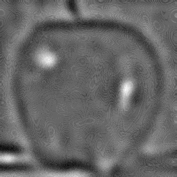
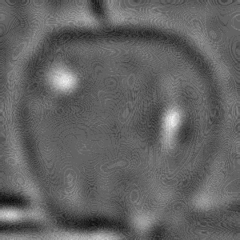
 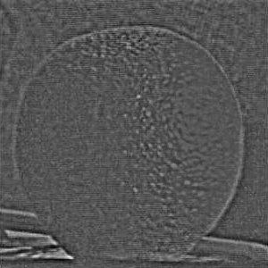
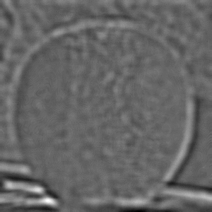
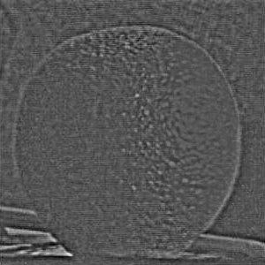
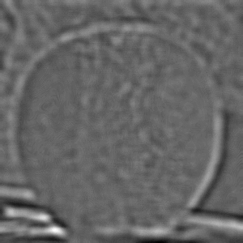
 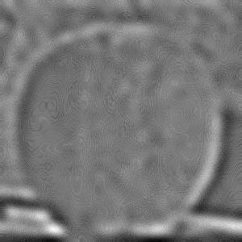
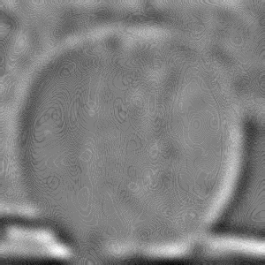
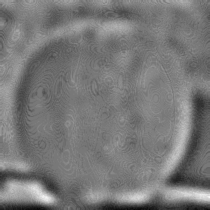
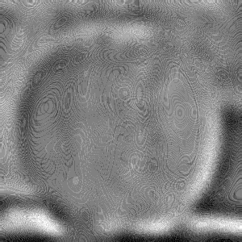
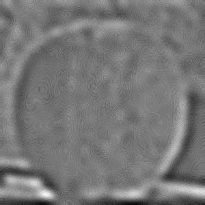
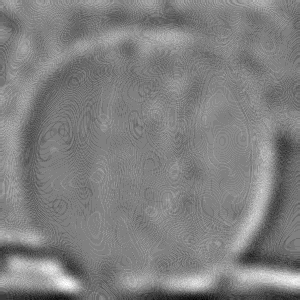
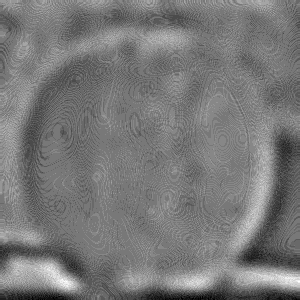
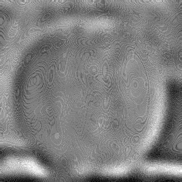
 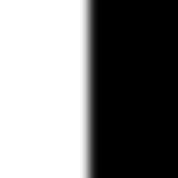
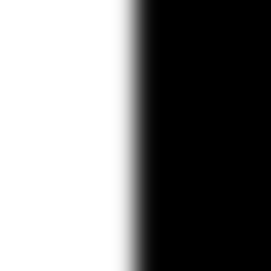
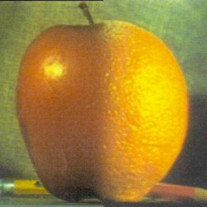
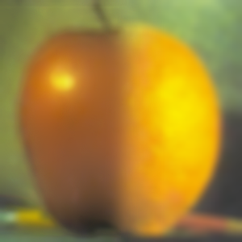
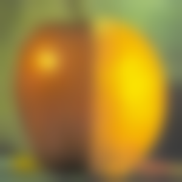
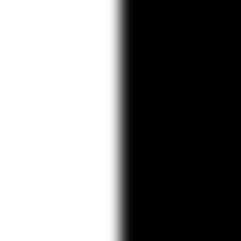
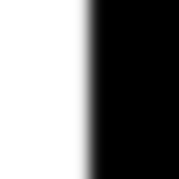
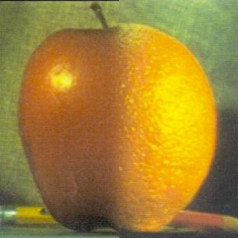
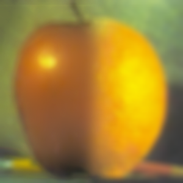
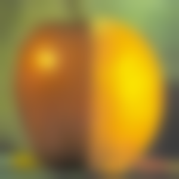
I tried multi-resolution blending at different scales. One I chose was a blend of A Thousand Miles of Rivers and Mountains and a photo of Guilin landscape, and the other was a blend of a whale and a falcon . The former uses a vertically segmented mask like the apple orange , while the latter uses PS to get an irregular mask of the wings.
σ=5
 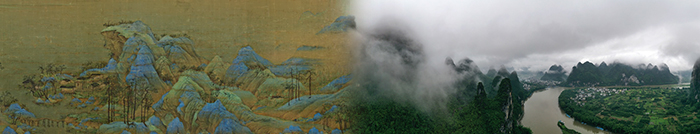
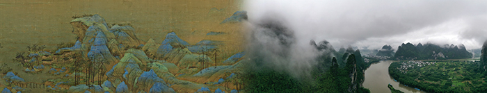
Technically, the image of the whale and the falcon didn't turn out as well as I had hoped. I think it was because the wing didn't quite match the whale's pose. What worked was that I chose the mask a little bit skillfully. The mask was slightly larger than the wing itself, so that the blur was between the sky and the sky, not between the wing and the sky. This way, I avoided damaging the wing and even preserved the blur caused by the original motion.
An ancient Chinese person told a legend about a giant fish in the northern sea that turned into a giant bird. I was excited to try to mix the two things, although the results were not as good as I expected.
σ=15

The main thing I gained from this project is some ideas related to spatial frequency. They reflect some characteristics of human visual information processing and explain part of our vision in a simple and effective way. In fact, I have always been interested in these complex abilities of human beings.